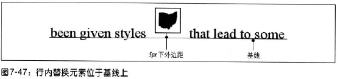

替换元素与基线
行内替换元素的基线与替换元素的下外边距与基线对齐。

但是正是由于替换元素的下外边距与基线对齐，容易造成一些我们不想看到的结果，例如：
这里我们可以看到由于图像是与基线对齐的，导致图形在单元格内产生了上下的间隙。事实上，只要一个替换元素是块级元素或表单元格元素的唯一后代，都会有这种行为。
对于这个问题，我们有两种解决办法：
将包含替换元素的表单元格的font-size和line-height都设置成和图像的height一样的大小
第二种方法是使图像成为块级元素，这样就不会生产行内框